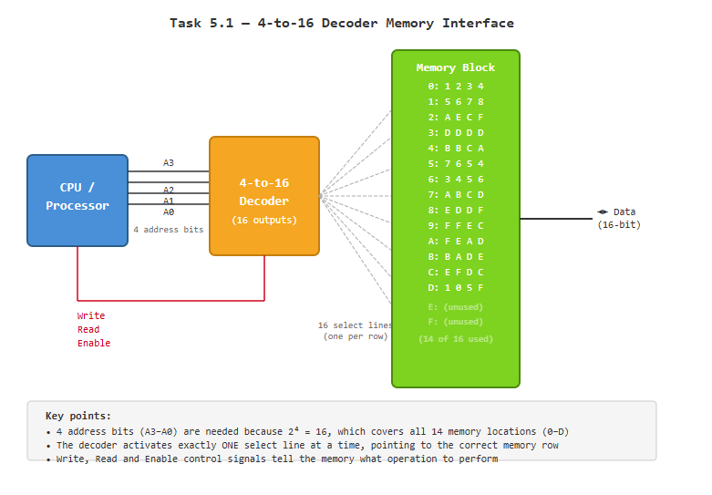

Virtual address = 4-bit VPN + 8-bit offset
Physical address = 3-bit PPN + 8-bit offset
Number of virtual pages = 2⁴ = 16 pages
Bytes per page = 2⁸ = 256 bytes
Number of physical pages = 2³ = 8 pages
The VPN bits tell you how many pages exist, and the offset bits tell you how big each page is.
They're separate because the MMU needs to translate the page number while keeping the offset the same.
Lab 8 - Memory and Memory Management
Task 1
0x2 = 0010, 0xC = 1100, 0x8 = 1000
Full binary: 0010 1100 1000 (12 bits)
First 4 bits = VPN → 0010 = 2
Last 8 bits = offset → 1100 1000 = 0xC8
Row 2: D=0, R=1, PPN=4
R=1 means the page is in RAM (no page fault)
Physical address = PPN 4 + offset 0xC8
Task 2
Page frame size = 4KB = 4096 bytes
Each range = (frame number × 4096) to (frame number × 4096) + 4095
D (frame 0, lower bound):
0 × 4096 = 0
Range: 0 – 4095, so D = 4095
A (frame 7, upper bound):
7 × 4096 = 28672
Range: 28672 – A
A = 28672 + 4095 = 32767
B (frame 5, upper bound):
5 × 4096 = 20480
Range: 20480 – B
B = 20480 + 4095 = 24575
C (frame 3, upper bound):
3 × 4096 = 12288
Range: 12288 – C
C = 12288 + 4095 = 16383
Each page frame is exactly 4096 bytes wide. To find any boundary you multiply the frame number
by the page size. The upper bound is always one less than the next frame's start (since addresses are whole numbers).
Task 3
Full 32-bit address: 00000000000000000011000010110111
First 20 bits = VPN, last 12 bits = offset
VPN (first 20 bits): 00000000000000000011
Offset (last 12 bits): 000010110111
00000000000000000011 in binary = 3
So Virtual Page 3 is being referenced
From the page table, VPN 3 has:
Present/Absent bit = 1 (page is in memory, no page fault!)
Page frame = 011 in binary = 3 in decimal
Take PPN: 011
Take offset: 000010110111
Physical address = 011 000010110111
Converting to hex: 0x30B7
The MMU takes the VPN (3), looks it up in the page table, finds it's present with PPN 011,
then simply swaps the VPN for the PPN while keeping the offset identical.
Task 4
Virtual memory = 2³² bytes
Physical memory = 2²⁴ bytes
Page size = 2¹⁰ bytes (1KB)
VPN = 22 bits, Offset = 10 bits, PPN = 14 bits
4 entry TLB
(i) Physical memory size ÷ page size
2²⁴ ÷ 2¹⁰ = 2¹⁴ = 16,384 pages
(ii) This is determined by the number of virtual pages
2³² ÷ 2¹⁰ = 2²² = 4,194,304 entries
(iii) Each entry needs to store the PPN + control bits (R, D etc.)
PPN = 14 bits + typically 2 control bits (R and D)
= 16 bits per entry
(iv) Total page table size = number of entries × bits per entry
= 2²² × 16 bits = 2²² × 2 bytes = 2²³ bytes
Pages needed = 2²³ ÷ 2¹⁰ = 2¹³ = 8,192 pages
Translation Lookaside Buffer (TLB) Simulation
This program simulates how a Translation Lookaside Buffer (TLB) works in a real operating system. The TLB acts as a small 4-entry cache that stores recent virtual-to-physical page translations, so the MMU doesn't have to access the slower page table in RAM every time. The program works through a sequence of virtual page number lookups — for each one it first checks the TLB, and if the VPN is found (a hit) it returns the physical page number immediately. If it isn't found (a miss) it falls back to the page table, retrieves the PPN, and loads it into the TLB for future use. When the TLB is full, the oldest entry is evicted to make room (FIFO). At the end, the hit ratio is calculated — VPNs like 1 and 6 appear multiple times in the sequence, so after the first miss they become hits, demonstrating exactly why TLBs improve performance in real systems.

Task 4.2
0x1804 = 0001 1000 0000 0100
In 16 bits: 0001100000000100
Offset (lower 10 bits): 0000000100 = 4
VPN (upper bits): 000110 = 6
VPN 6 is in the TLB → TLB Hit!
PPN = 2
PPN 2 in binary = 000010
Offset = 0000000100
Physical address = 000010 0000000100 = 0x0804
The MMU checks the TLB first before going to the page table. Since VPN 6 was already cached
in the TLB, we get an instant hit and can build the physical address immediately by swapping
the VPN for PPN 2, keeping the offset unchanged.
0x0FC = 0000 0000 1111 1100
In 16 bits: 0000000011111100
Offset (lower 10 bits): 0011111100 = 0xFC = 252
VPN (upper bits): 000000 = 0
VPN 0 is in the TLB → TLB Hit
But R = 0 → page is NOT in physical memory
This causes a Page Fault
Even though VPN 0 appears in the TLB, its resident bit R=0 means the page isn't actually
loaded in RAM. The OS must step in, load the page from disk into a free frame, update the
page table and TLB, then retry the instruction.
Task 5.1
14 memory locations (0 through D)
Need enough bits to represent 14 unique addresses
2³ = 8 (not enough)
2⁴ = 16 (enough to cover all 14 locations)
Need a 4-to-16 decoder with 4 address input bits
The decoder takes the 4-bit address and activates exactly one of the 16 output lines,
selecting the correct memory location. Even though only 14 locations are used, you still
need 4 bits because 3 bits can only address 8 locations.

Task 5.2
Control bits: Write, Read, Enable (3 bits)
Address bits = 4 bits
Total address = 3 control bits + 4 address bits = 7 bits total
Pattern: Write | Read | Enable | A3 | A2 | A1 | A0
a) Read memory location containing FEAD
FEAD is at index A (hex) = 1010 in binary
Want to read so: Write=0, Read=1, Enable=1
Full address = 0 1 1 1 0 1 0 = 0x1A in hex
b) Write to memory location with index C
Index C (hex) = 1100 in binary
Want to write so: Write=1, Read=0, Enable=1
Full address = 1 0 1 1 1 0 0 = 0x5C in hex
By combining the control bits with the address bits into one value, the processor can specify
both where to access memory and what operation to perform in a single address. This is a simple
but effective way to control memory interfacing.